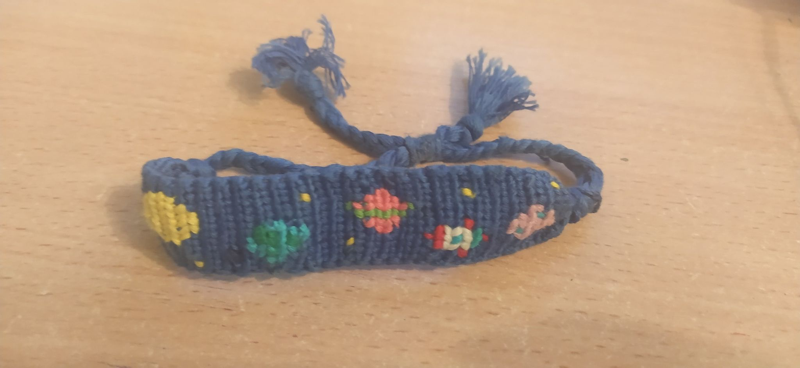
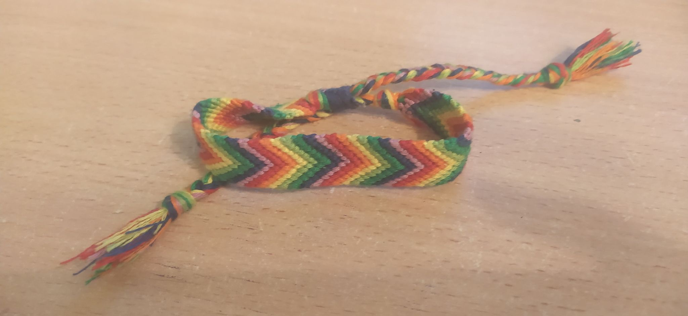
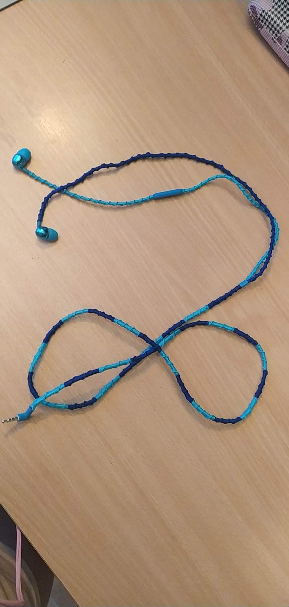

background-color: #9F9FDF ;
Plecenie z muliny to łatwa rzecz ale trzeba miec wyczucie i dużo cierpliwości. Z tego materiału możne na przykład pleśc bransoletki.


Ale muline można wykorzystać w zależności od sytuacji jak zabazpieczenia bala od słuchawe, aby się nie zniszczył.

Co do bransoletek używam dwóch stron z których robie wzory
pierwsza
druga